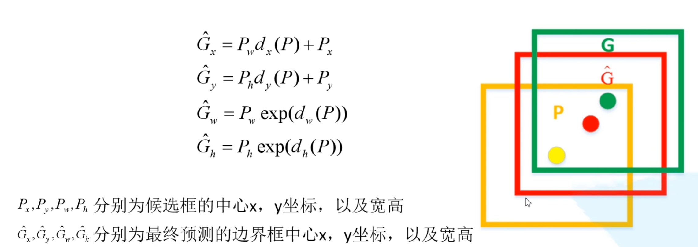
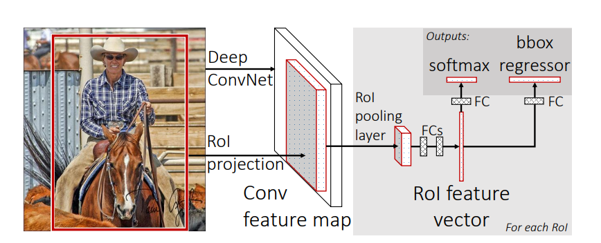
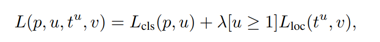
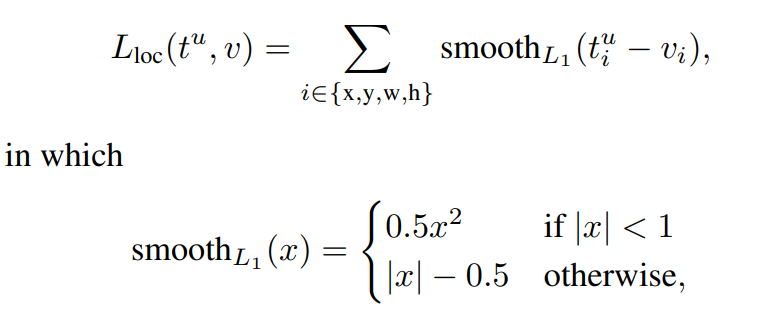

经典目标检测
RCNN
首先，使用Selective Search算法，从图片中裁出来N个小区域图像
然后将者N个小区域图像分别使用CNN提取得到D维的特征向量。至此得到了NxD的矩阵，该矩阵包含每个小区域对应的D维特征向量
接着，将NxD的矩阵分别使用k个SVM分类器(Dxk)进行分类，得到Nxk的矩阵，即每个小区域图像的分类结果(k个类别，取概率最大的作为预测类别)。在得到每个小区域图像的预测类别后，可能存在同一个目标被多个小区域图片同时预测到的情况，因此还需要针对每个类别对应的小区域图像做一个NMS后处理。
最后，对于NMS后保留下来M(M<=N)个的小区域图像，先按照这些建议框(小区域图像)与GT之间的IoU做一个过滤，保留IoU大于阈值的建议框，然后将每个建议框对应的D维特征向量输入回归器，得到修正后的建议框位置。这里，和分类器个数一样，总共设置了k个回归器，各自负责不同类别(上一步预测得到的类别)的建议框位置修正。
RCNN存在的问题：
- 测试速度慢(SS算法提取候选框很慢)
- 训练速度慢(CNN,SVM分类器，回归器)
- 训练所需空间大(需要将目标框的小区域提取特征并写入磁盘)
FastRCNN
首先，使用Selective Search算法，从图片中定位得到N个小区域图像，不同于RCNN，这里只需要记录这些建议框的位置信息，不需要单独裁剪出来
然后，将整张图片输入CNN中得到特征图，并根据原图和特征图之间的映射关系(等比例缩放)，得到每个建议框对应的特征图(不需要将每个建议框对应的小区域图片单独裁剪出来并分别使用CNN提取特征，因而速度快了很多)
接着，将每个建议框的特征图使用ROI pooling层映射到7x7的小特征图，然后加入全连接层做进一步的特征提取，得到ROI特征向量
最后，每个建议框的ROI特征向量分别输入到分类层和回归层(都是全连接层)，得到预测的类别以及边界框回归参数。 这里，对于每一个建议框的ROI特征向量，分类层会输出k+1个节点，k是总类别数，1对应背景类别；边界框参数回归器输出(k+1)x4个节点，即针对每个类别的边界框回归参数，其中的边界框回归参数是$(d_x,d_y,d_w,d_h)$，分别对应将通过SS得到建议框转换到预测的边界框时，建议框的中心点坐标和建议框的宽高的变换尺度，具体计算公式如下：

上述所讲内容，用一张整体网络架构图表示如下：

FastRCNN的损失函数包含分类损失和定位损失两部分：

其中，p是预测的类别向量，假设k类，那么p就是k+1维的类别概率向量，u是真实类别，$t^u=(t^u_x,t^u_y,t^u_w,t^u_h)$是预测的边界框回归参数，$v=(v_x,v_y,v_w,v_h)$是真实的边界框回归参数(数据标定可以得到中心点和宽高，于是可以根据尺度变换公式反推$v$)
分类损失是交叉熵，定位损失如下：

只有预测的正样本边界框才有对应的真实边界框，那些被预测为背景类别的建议框是负样本，负样本是没有真实的边界框与之对应的。所以，只有满足$[u\gt=1]$，即类别不被预测为背景(u=0)的边界框才会计算定位损失，这里的$[u\gt=1]$可以看作是一个逻辑函数，满足$u\gt=1$的条件则函数值为1，否则为0。
更新中…